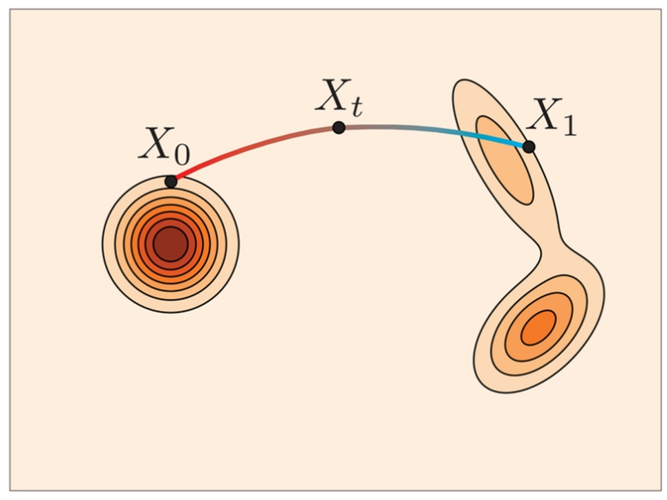

Mô hình hóa tín hiệu khối phổ bằng phương pháp flow matching

Proteomics là lĩnh vực nghiên cứu về hệ protein, đóng vai trò quan trọng trong chẩn đoán bệnh và phát triển thuốc. Trong đó, mô hình hóa tín hiệu khối phổ (hay MS/MS) của peptide là bài toán quan trọng trong ngành này, đặc biệt trong việc định danh peptide và xây dựng thư viện phổ. Tuy nhiên, tín hiệu MS/MS có cấu trúc phức tạp và phụ thuộc mạnh vào thông tin của peptide và các điều kiện đo đạc. Phần lớn các phương pháp hiện nay tiếp cận bài toán theo hướng tất định, tức là dự đoán một phổ duy nhất cho mỗi peptide đầu vào. Cách tiếp cận này chưa phản ánh đầy đủ tính bất định của quá trình phân mảnh, nơi cùng một peptide có thể tạo ra nhiều tín hiệu phổ khác nhau.
Trong khóa luận này, tôi nghiên cứu phương pháp mô hình hóa tín hiệu khối phổ dựa trên flow matching. Mục đích hướng tới là xấp xỉ được phân phối tín hiệu phổ tương ứng với peptide, đã được quan sát lẫn chưa được quan sát. Với phương pháp này, ta cần mô hình hóa trường vector biến đổi từ phân bố nhiễu Gaussian sang phân bố phổ mục tiêu. Nhờ đó, ta có thể sinh nhiều phổ khác nhau cho cùng một điều kiện đầu vào, phù hợp với bản chất ngẫu nhiên của dữ liệu khối phổ thực tế.
Về phương pháp, tín hiệu khối phổ được biểu diễn dưới dạng vector cường độ của các ion. Mô hình nhận thông tin peptide làm điều kiện tạo sinh, sau đó học cách biến đổi một vector nhiễu ban đầu thành tín hiệu phổ tương ứng. Kiến trúc mô hình gồm bộ mã hóa peptide bằng transformer encoder và mạng ResMLP dự đoán hướng biến đổi trong quá trình flow matching. Mô hình được đánh giá trên tập dữ liệu ProteomeTools bằng hai độ đo Pearson Correlation Coefficient (PCC) và Spectral Angle (SA), với các cách tổng hợp single sample, max of K và mean of K. Kết quả thực nghiệm cho thấy mô hình đạt PCC/SA khoảng 0.80–0.82/0.82–0.84 khi sinh một mẫu duy nhất, và tăng lên khoảng 0.91–0.92/0.90-0.93 khi sinh nhiều mẫu cho cùng một điều kiện đầu vào.
Kết quả khóa luận cho thấy flow matching là một hướng tiếp cận khả thi cho bài toán sinh tín hiệu khối phổ. Phương pháp đề xuất đã có thể tạo ra phổ tương đối sát phổ thật, cũng như mô phỏng tính đa dạng của phân phối phổ.
Từ khóa: Flow Matching, Generative Model, Proteomics, MS/MS Spectrum.
GitHub:
https://github.com/snozywolf59/ms2-signal-modelling-by-fm
https://github.com/digitalbiologylab/ms2-signal-modelling-by-fm
Tô Hữu Bằng, tóm tắt khóa luận tại Trường Đại học Công nghệ, Đại học Quốc gia Hà Nội, 2026